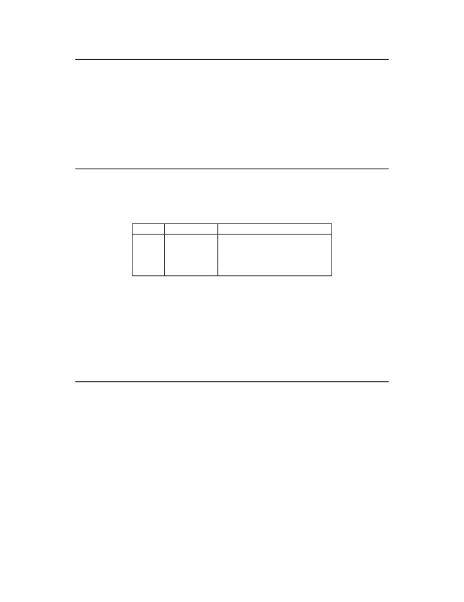

<table border="0" height="1453" width="1123">
<tr><td>
<div style="position:absolute; top:0; left:0;"></div>
<div style="position:absolute;top:74.119;left:132.145;"><nobr>
<span style="font-size:20.022;">24</span>
</nobr></div>
<div style="position:absolute;top:74.119;left:331.141;"><nobr>
<span style="font-size:20.022;font-style:italic;">Volume II: RISC-V Privileged Architectures V20190608-Priv-MSU-Ratified</span>
</nobr></div>
<div style="position:absolute;top:153.720;left:182.201;"><nobr>
<span style="font-size:18.285;font-style:italic;">To date, the V extension is the only standard extension that defines additional state beyond the</span>
</nobr></div>
<div style="position:absolute;top:175.661;left:182.201;"><nobr>
<span style="font-size:18.285;font-style:italic;">floating-point CSR and data registers.</span>
</nobr></div>
<div style="position:absolute;top:211.491;left:132.145;"><nobr>
<span style="font-size:20.022;">The FS[1:0]</span>
<span style="font-size:20.022;font-weight:bold;">WARL</span>
<span style="font-size:20.022;">field and the XS[1:0] read-only field are used to reduce the cost of context save</span>
</nobr></div>
<div style="position:absolute;top:236.358;left:132.145;"><nobr>
<span style="font-size:20.022;">and restore by setting and tracking the current state of the floating-point unit and any other user-</span>
</nobr></div>
<div style="position:absolute;top:261.227;left:132.145;"><nobr>
<span style="font-size:20.022;">mode extensions respectively. The FS field encodes the status of the floating-point unit, including</span>
</nobr></div>
<div style="position:absolute;top:286.095;left:132.145;"><nobr>
<span style="font-size:20.022;">the CSR fcsr and floating-point data registers f0 – f31 , while the XS field encodes the status of</span>
</nobr></div>
<div style="position:absolute;top:310.962;left:132.145;"><nobr>
<span style="font-size:20.022;">additional user-mode extensions and associated state. These fields can be checked by a context</span>
</nobr></div>
<div style="position:absolute;top:335.829;left:132.145;"><nobr>
<span style="font-size:20.022;">switch routine to quickly determine whether a state save or restore is required. If a save or restore is</span>
</nobr></div>
<div style="position:absolute;top:360.696;left:132.145;"><nobr>
<span style="font-size:20.022;">required, additional instructions and CSRs are typically required to effect and optimize the process.</span>
</nobr></div>
<div style="position:absolute;top:417.955;left:182.201;"><nobr>
<span style="font-size:18.285;font-style:italic;">The design anticipates that most context switches will not need to save/restore state in either</span>
</nobr></div>
<div style="position:absolute;top:439.897;left:182.201;"><nobr>
<span style="font-size:18.285;font-style:italic;">or both of the floating-point unit or other extensions, so provides a fast check via the SD bit.</span>
</nobr></div>
<div style="position:absolute;top:475.727;left:132.145;"><nobr>
<span style="font-size:20.022;">The FS and XS fields use the same status encoding as shown in Table</span>
<span style="font-size:20.022;color: #000080;"><a href="#" onClick="javascript:parent.GotoNewPage(35); return false">3.3</a></span>
<span style="font-size:20.022;">, with the four possible</span>
</nobr></div>
<div style="position:absolute;top:500.594;left:132.145;"><nobr>
<span style="font-size:20.022;">status values being Off, Initial, Clean, and Dirty.</span>
</nobr></div>
<div style="position:absolute;top:544.024;left:331.466;"><nobr>
<span style="font-size:20.022;">Status</span>
</nobr></div>
<div style="position:absolute;top:569.623;left:377.183;"><nobr>
<span style="font-size:20.022;">0</span>
</nobr></div>
<div style="position:absolute;top:594.490;left:377.183;"><nobr>
<span style="font-size:20.022;">1</span>
</nobr></div>
<div style="position:absolute;top:619.357;left:377.183;"><nobr>
<span style="font-size:20.022;">2</span>
</nobr></div>
<div style="position:absolute;top:644.226;left:377.183;"><nobr>
<span style="font-size:20.022;">3</span>
</nobr></div>
<div style="position:absolute;top:544.024;left:409.867;"><nobr>
<span style="font-size:20.022;">FS Meaning</span>
</nobr></div>
<div style="position:absolute;top:569.623;left:409.867;"><nobr>
<span style="font-size:20.022;">Off</span>
</nobr></div>
<div style="position:absolute;top:594.490;left:409.867;"><nobr>
<span style="font-size:20.022;">Initial</span>
</nobr></div>
<div style="position:absolute;top:619.357;left:409.867;"><nobr>
<span style="font-size:20.022;">Clean</span>
</nobr></div>
<div style="position:absolute;top:644.226;left:409.867;"><nobr>
<span style="font-size:20.022;">Dirty</span>
</nobr></div>
<div style="position:absolute;top:544.024;left:538.490;"><nobr>
<span style="font-size:20.022;">XS Meaning</span>
</nobr></div>
<div style="position:absolute;top:569.623;left:538.490;"><nobr>
<span style="font-size:20.022;">All off</span>
</nobr></div>
<div style="position:absolute;top:594.490;left:538.490;"><nobr>
<span style="font-size:20.022;">None dirty or clean, some on</span>
</nobr></div>
<div style="position:absolute;top:619.357;left:538.490;"><nobr>
<span style="font-size:20.022;">None dirty, some clean</span>
</nobr></div>
<div style="position:absolute;top:644.226;left:538.490;"><nobr>
<span style="font-size:20.022;">Some dirty</span>
</nobr></div>
<div style="position:absolute;top:709.490;left:315.625;"><nobr>
<span style="font-size:20.022;">Table 3.3: Encoding of FS[1:0] and XS[1:0] status fields.</span>
</nobr></div>
<div style="position:absolute;top:756.867;left:132.145;"><nobr>
<span style="font-size:20.022;">In systems that do not implement S-mode and do not have a floating-point unit, the FS field is</span>
</nobr></div>
<div style="position:absolute;top:781.735;left:132.145;"><nobr>
<span style="font-size:20.022;">hardwired to zero.</span>
</nobr></div>
<div style="position:absolute;top:824.887;left:132.145;"><nobr>
<span style="font-size:20.022;">In systems without additional user extensions requiring new state, the XS field is hardwired to</span>
</nobr></div>
<div style="position:absolute;top:849.754;left:132.145;"><nobr>
<span style="font-size:20.022;">zero. Every additional extension with state provides a CSR field that encodes the equivalent of the</span>
</nobr></div>
<div style="position:absolute;top:874.623;left:132.145;"><nobr>
<span style="font-size:20.022;">XS states. The XS field represents a summary of all extensions’ status as shown in Table</span>
<span style="font-size:20.022;color: #000080;"><a href="#" onClick="javascript:parent.GotoNewPage(35); return false">3.3</a></span>
<span style="font-size:20.022;">.</span>
</nobr></div>
<div style="position:absolute;top:931.881;left:182.201;"><nobr>
<span style="font-size:18.285;font-style:italic;">The XS field effectively reports the maximum status value across all user-extension status fields,</span>
</nobr></div>
<div style="position:absolute;top:953.822;left:182.201;"><nobr>
<span style="font-size:18.285;font-style:italic;">though individual extensions can use a different encoding than XS.</span>
</nobr></div>
<div style="position:absolute;top:989.652;left:132.145;"><nobr>
<span style="font-size:20.022;">The SD bit is a read-only bit that summarizes whether either the FS field or XS field signals the</span>
</nobr></div>
<div style="position:absolute;top:1014.519;left:132.145;"><nobr>
<span style="font-size:20.022;">presence of some dirty state that will require saving extended user context to memory. If both XS</span>
</nobr></div>
<div style="position:absolute;top:1039.388;left:132.145;"><nobr>
<span style="font-size:20.022;">and FS are hardwired to zero, then SD is also always zero.</span>
</nobr></div>
<div style="position:absolute;top:1082.541;left:132.145;"><nobr>
<span style="font-size:20.022;">When an extension’s status is set to Off, any instruction that attempts to read or write the cor-</span>
</nobr></div>
<div style="position:absolute;top:1107.408;left:132.145;"><nobr>
<span style="font-size:20.022;">responding state will cause an illegal instruction exception. When the status is Initial, the corre-</span>
</nobr></div>
<div style="position:absolute;top:1132.275;left:132.145;"><nobr>
<span style="font-size:20.022;">sponding state should have an initial constant value. When the status is Clean, the corresponding</span>
</nobr></div>
<div style="position:absolute;top:1157.142;left:132.145;"><nobr>
<span style="font-size:20.022;">state is potentially different from the initial value, but matches the last value stored on a context</span>
</nobr></div>
<div style="position:absolute;top:1182.010;left:132.145;"><nobr>
<span style="font-size:20.022;">swap. When the status is Dirty, the corresponding state has potentially been modified since the</span>
</nobr></div>
<div style="position:absolute;top:1206.877;left:132.145;"><nobr>
<span style="font-size:20.022;">last context save.</span>
</nobr></div>
<div style="position:absolute;top:1250.029;left:132.145;"><nobr>
<span style="font-size:20.022;">During a context save, the responsible privileged code need only write out the corresponding state</span>
</nobr></div>
<div style="position:absolute;top:1274.897;left:132.145;"><nobr>
<span style="font-size:20.022;">if its status is Dirty, and can then reset the extension’s status to Clean. During a context restore,</span>
</nobr></div>
<div style="position:absolute;top:1299.766;left:132.145;"><nobr>
<span style="font-size:20.022;">the context need only be loaded from memory if the status is Clean (it should never be Dirty at</span>
</nobr></div>
</td></tr>
</table>
